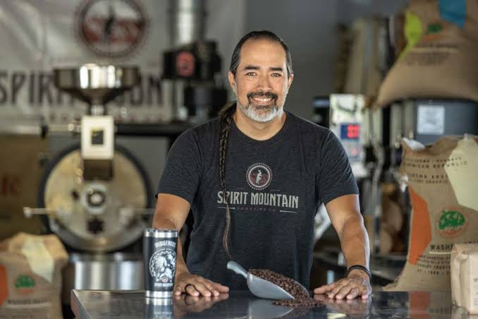
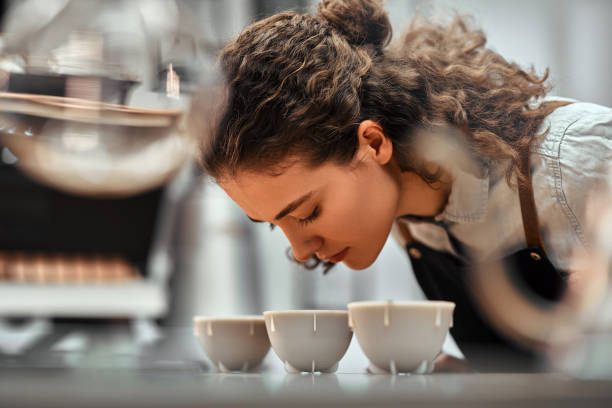
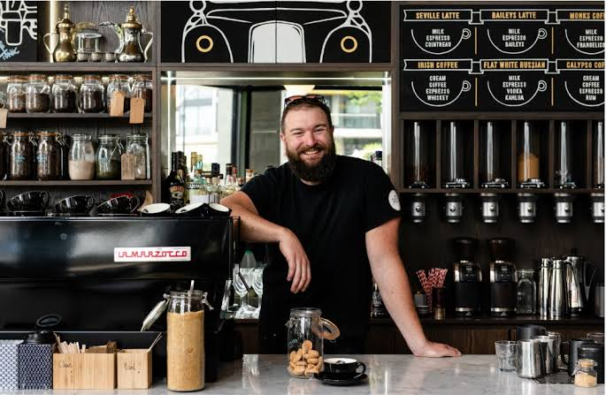

2020
First Small-Batch Experiments
The founder began roasting limited batches at home, tracking aroma, roast curves, and tasting notes one cup at a time.
Our story begins with small batches, honest beans, and a daily ritual of roasting coffee with care.

Coffee Roastery started with a simple habit: tasting every cup slowly, learning what made one roast feel bright, another feel deep, and another feel like home. What began as weekend experiments with small batches became a daily practice of choosing better beans, roasting with patience, and sharing coffee with people who cared about flavor.
The founder wanted the roastery to feel personal, not rushed. Every blend is shaped around balance, aroma, and freshness, so each cup carries the character of the bean and the care of the roasting process.
Today, that same approach guides the shop: honest sourcing, fresh roasting, and coffee served with warmth from the first morning brew to the last cup of the day.
We choose beans from growers and partners who care about quality, traceability, and fair relationships.
Small batches keep every roast expressive, aromatic, and ready for the cup at its best moment.
Our roastery is built around regulars, conversations, and the comfort of a thoughtful daily brew.
From small test batches to a daily roasting rhythm, every year added a new layer to the craft.
The founder began roasting limited batches at home, tracking aroma, roast curves, and tasting notes one cup at a time.
Weekend pop-ups introduced the first signature medium roast and helped shape the warm, community-first style of the brand.
A small roasting setup became the heart of the operation, allowing fresher batches, tighter quality checks, and more consistent flavor.
The team launched a balanced house blend with caramel sweetness, soft acidity, and a clean finish for everyday drinkers.
Roasting moved into a daily rhythm, with beans prepared in smaller quantities to keep each cup fresh and expressive.
Rotating single-origin coffees joined the menu, giving guests a way to explore fruitier, brighter, and more complex profiles.
Founder & Head Roaster

Quality Lead

Brew Bar Manager